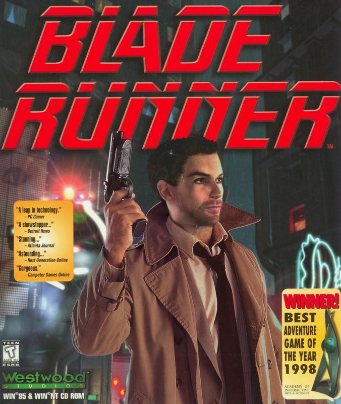
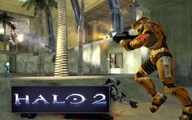
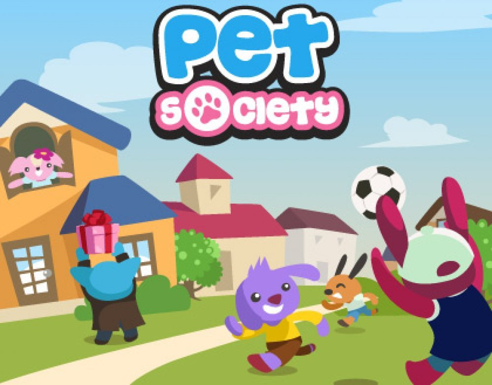

Home
Banners
Baba
A B A N D O N W A R E
Whether it's copyright issues, server shutdowns, or the passage of time, these games are not accessible for purchase or play.
This archive is focused on preserving records of digital artifacts that have been forsaken by their developers and publishers.
To get started, browse the games below and click on the covers.
PICK A GAME



Blade Runner
Windows
1997
2003
Show/Hide Image
Button
Hello World!
Quake PC Video game 1996 2003